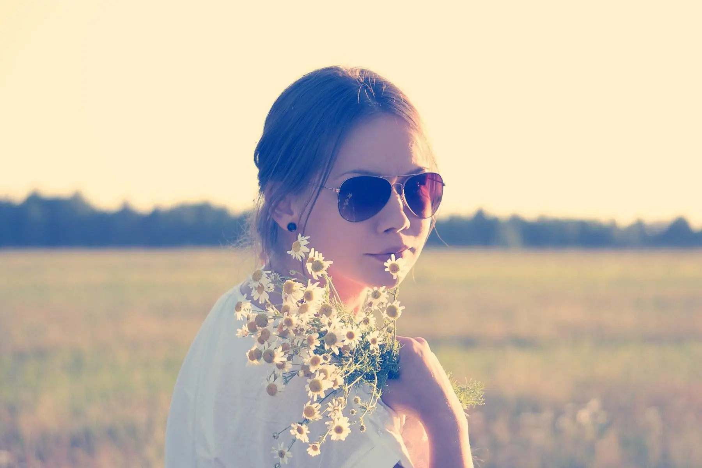
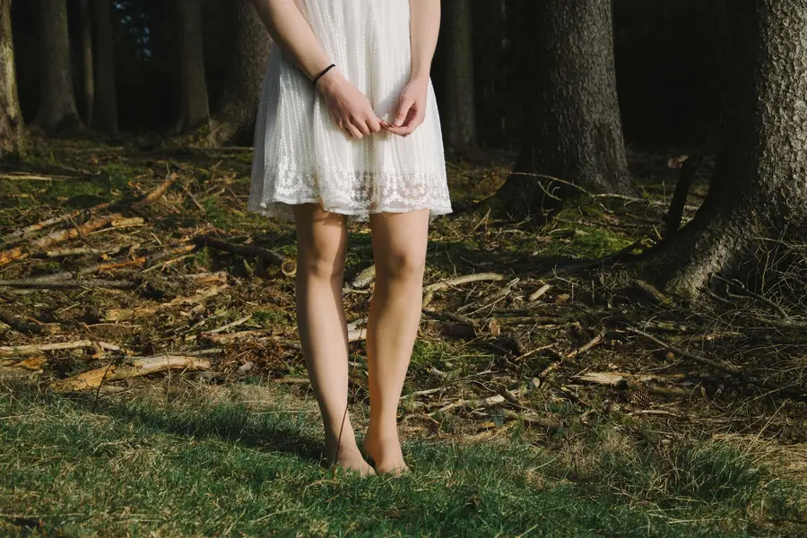
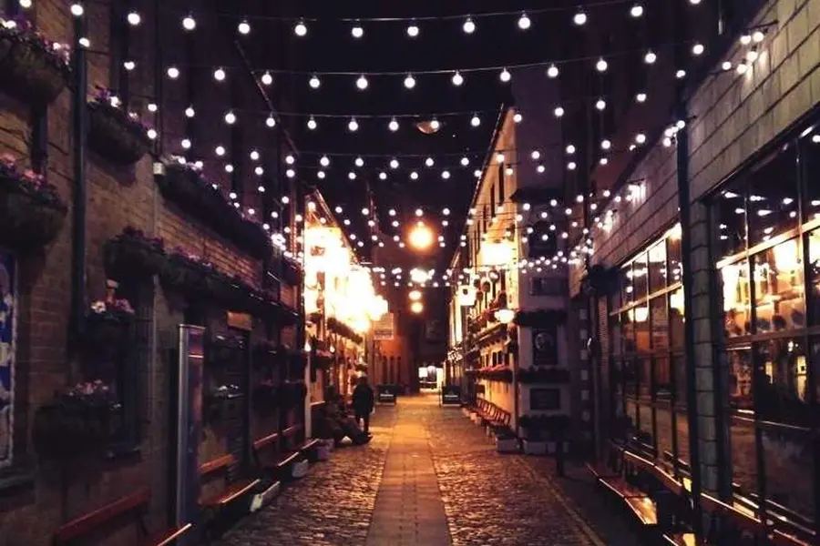
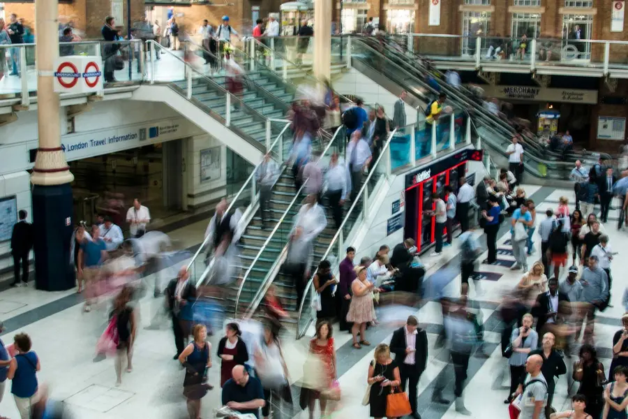

Fotógrafo de retratos, casamentos e eventos
Fotografia que guarda o que importa.
Ensaios, casamentos, eventos e viagens com direção leve e luz natural. Fotos editadas em até 10 dias, a partir de R$ 690.
Como eu fotografo
Eu observo antes de clicar. Procuro a luz certa, o gesto que ninguém ensaiou e o instante que passa rápido demais. Você vive o seu dia; eu cuido para que ele continue existindo em cada foto.
0dias para receber as fotos editadas
0tipos de ensaio e cobertura
0das fotos entregues em alta resolução
Portfólio por tema
Clique em uma foto para ampliar
Serviços e preços
Todos os pacotes incluem direção durante as fotos, edição de cor e galeria online para baixar e compartilhar.
-
01
Ensaio de retrato
1 hora, 1 local, 40 fotos editadas
a partir de R$ 690 -
02
Ensaio de casal ou gestante
2 horas, até 2 locais, 70 fotos editadas
a partir de R$ 1.190 -
03
Casamento
Da preparação à festa, até 10 horas, todas as boas fotos
a partir de R$ 5.900 -
04
Eventos e festas
Aniversários, corporativos e shows, por hora
a partir de R$ 480/h -
05
Produtos e gastronomia
Fotos para cardápio, loja virtual e redes sociais
a partir de R$ 890 -
06
Viagem e paisagem
Acompanho sua viagem ou vendo fotos para decoração
sob consulta
Cada foto, uma história



Como funciona, em 4 passos
- 01
Conversa
Você me conta a ideia pelo WhatsApp ou formulário. Respondo em até 1 dia útil.
- 02
Planejamento
Escolhemos local, horário de melhor luz, roupas e referências.
- 03
Dia das fotos
Direção leve e tranquila. Você não precisa saber posar.
- 04
Entrega
Galeria online com as fotos editadas em até 10 dias.
Sobre o fotógrafo
Comecei com uma câmera de filme e nunca mais parei. Hoje fotografo pessoas, celebrações, lugares e marcas, sempre com o mesmo cuidado: luz bonita, cor fiel e momentos verdadeiros.
Atendo em estúdio, ao ar livre e no local do seu evento. Viajo para outras cidades sob consulta.
Conversar sobre o seu ensaioVamos marcar
o seu ensaio?
Envie a data e o tipo de foto. Respondo com valores e horários disponíveis em até 1 dia útil.
Chamar no WhatsApp